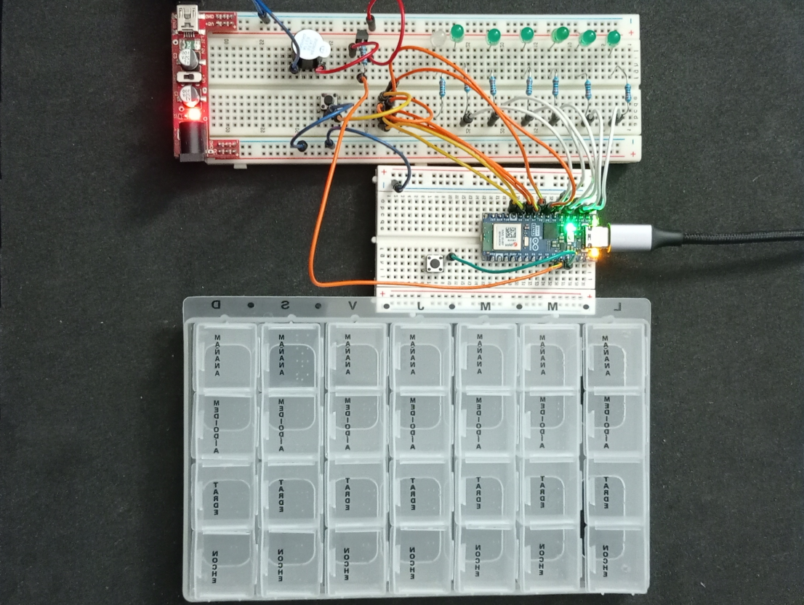

02 · Enunciado y reto del proyecto
En este apartado concretamos el núcleo del trabajo: cuál es el problema planteado, qué papel tiene el backend y qué alcance se espera dentro del proyecto.
← Volver al índice1. Situación de partida
El sistema parte de un pastillero inteligente —o de una simulación equivalente— capaz de registrar eventos relacionados con la toma de medicación. A partir de esos eventos, el backend debe ser capaz de interpretar qué ha ocurrido, relacionarlo con una planificación previa y mantener un estado actualizado del seguimiento.
Desde esa base, el reto no consiste en construir el dispositivo, sino en desarrollar la parte del servidor que hace posible que el conjunto tenga sentido: consulta de planificación, registro de eventos, cambio de estados, alertas y datos para seguimiento.
2. Alcance del proyecto
El proyecto no pretende cubrir todos los casos posibles de un sistema de medicación profesional, pero sí construir un MVP suficientemente claro y completo. Ese MVP debe permitir comprobar que el backend resuelve el flujo esencial del sistema y que puede defenderse como una solución coherente dentro del módulo.
- Consultar el plan del día de un dispositivo o de un paciente.
- Registrar eventos de apertura y confirmación.
- Actualizar el estado de una toma.
- Generar alertas o incidencias cuando corresponda.
- Ofrecer información útil para seguimiento o dashboard.
Prototipo Hardware

3. Regla principal del proyecto
La lógica central que organiza el sistema es sencilla de formular, pero importante para todo el backend: una toma solo se considera correcta cuando existe apertura de la cajita y confirmación dentro de una ventana temporal configurable. Esa regla afecta al modelo de datos, a los eventos, a la lógica del servicio y a la forma de interpretar el estado final de cada dosis.
Por eso conviene tenerla siempre presente. Muchas de las decisiones del proyecto se justifican precisamente por esa necesidad de coordinar planificación, eventos y tiempo.
4. Tareas principales del proyecto
El trabajo se articula en varias tareas principales que se van cerrando por fases. No es necesario resolverlas todas de golpe. La secuencia está pensada para que primero se entienda el problema, después se diseñe el sistema y solo entonces se programe la parte técnica.
- Analizar el sistema y sus reglas de funcionamiento.
- Diseñar el modelo de dominio y la base de datos.
- Definir y desarrollar la API REST.
- Implementar el backend con persistencia y lógica de negocio.
- Validar el sistema con pruebas e integración.
- Documentar y preparar la defensa final.